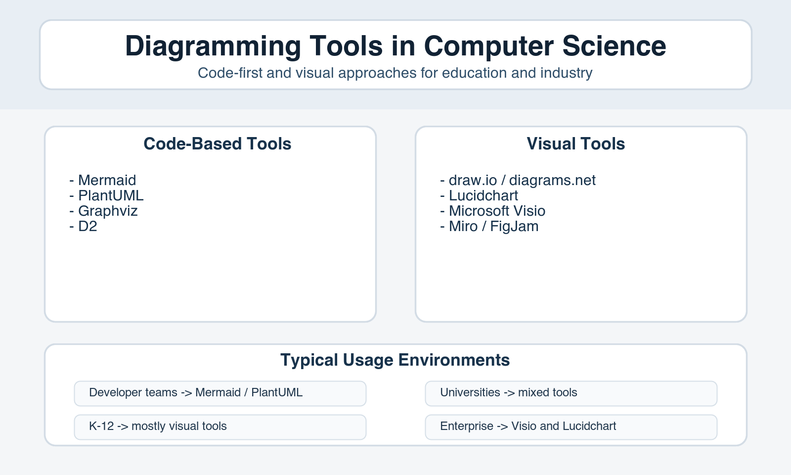

Code-Based Diagram Tools
- Mermaid
- PlantUML
- Graphviz
- D2
Mermaid is a text-first way to build software diagrams directly from code, making collaboration and documentation easier for students and developer teams.

Developer teams → Mermaid / PlantUML
Universities → mixed tools
K-12 → mostly visual tools
Enterprise → Visio and Lucidchart